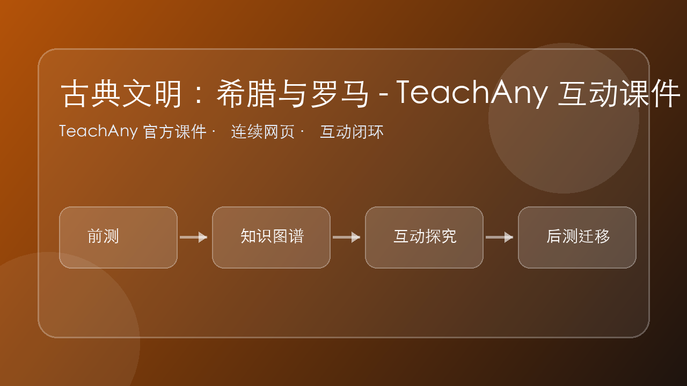

🏛️ 古典文明：希腊与罗马
西方文明的两大源头——民主与法律的诞生

西方文明的两大源头——民主与法律的诞生
"我们的制度不是模仿他国的，相反，我们倒是别人的榜样。我们的制度之所以被称为民主政治，是因为政权在全体公民手中，而不是在少数人手中。"
——伯里克利《阵亡将士国葬演说》，公元前431年
古希腊位于地中海东部，三面环海（爱琴海、地中海、伊奥尼亚海），境内多山少平原，没有大河流域支撑大规模农业。
这种地理环境造就了古希腊的独特发展路径：
雅典民主并非一蹴而就，而是经历了近两百年的改革逐步完善：
公民大会——一切重大事项由公民大会决定
直接民主——公民亲自投票，不通过代表
抽签选举——大多数公职通过抽签产生
轮番而治——公民轮流担任公职
| ✅ 进步性 | ❌ 局限性 |
|---|---|
| 公民直接参与国家管理，是人类政治文明的重大创举 | 仅限成年男性公民，妇女、奴隶、外邦人被排除 |
| 调动了公民的积极性和创造力 | 公民只占总人口的约1/10，是"少数人的民主" |
| 创造了灿烂的希腊文化 | 抽签选举可能导致无能者当政 |
| 为近代西方民主政治奠定了基础 | 直接民主仅适合小国寡民的城邦 |
"在我们这里，每一个人所关心的，不仅是他自己的事务，而且也关心国家的事务……一个不关心政治的人，我们不说他是一个注意自己事务的人，而说他根本没有事务。"
——伯里克利
公元前5世纪雅典人口约30万，其中公民约4万（成年男性公民约2-3万），外邦人约4万，奴隶约22万。
史料一分析：反映了雅典公民积极参与政治的特点——"主权在民"；但也隐含问题：只有公民才能关心政治，占人口大多数的奴隶和外邦人被完全排除。
史料二分析：公民约占总人口13%（4/30），成年男性公民仅占7%-10%。这说明雅典民主本质上是由少数人享有的民主，是建立在奴隶制基础上的民主。
点击时代按钮切换疆域版图；悬停高亮边界；点击红色城市标记查看详情。
罗马的政治制度经历了一条与希腊不同的发展道路：
罗马政治演变的逻辑：共和制（小国适用）→ 疆域扩大 → 共和制无法治理大帝国 → 帝制（大国需要集权）
这不是"退步"，而是适应统治需要的制度调整
罗马从台伯河畔的城邦，扩张为地跨欧亚非三大洲的庞大帝国。万民法的产生，正是为了治理这片广袤疆域上的不同民族：
罗马最伟大的遗产不是军事征服，而是法律制度：
"没有任何事情比统治者更要遵守法律更具有统治力了。在法律涉及的地方，统治者本人就是法律的仆人。"
——罗马法谚
| 维度 | 🏛️ 古希腊（以雅典为代表） | ⚔️ 古罗马 |
|---|---|---|
| 地理环境 | 三面环海，多山少地 | 三面环海，但意大利半岛平原较多 |
| 政治制度 | 城邦制；直接民主 | 共和制 → 帝制；混合政体 |
| 核心贡献 | 民主政治的实践与理论 | 法律体系的建构与完善 |
| 民主形式 | 直接民主（公民大会） | 间接民主元素（元老院、执政官） |
| 局限性 | 奴隶制基础上的少数人民主 | 法律维护奴隶制度；帝制走向专制 |
| 对现代影响 | 民主理念、公民参与 | 法律精神、制度框架 |
将以下事件按时间先后顺序排列（拖拽调整）：
雅典创造了直接民主的范例，罗马建构了法律制度的框架——民主与法律，是古典文明留给现代世界最重要的双重遗产。

![古典文明：希腊与罗马 - TeachAny 互动课件情境学习图](data:image/svg+xml,%3Csvg%20xmlns%3D%22http%3A//www.w3.org/2000/svg%22%20width%3D%22960%22%20height%3D%22540%22%20viewBox%3D%220%200%20960%20540%22%3E%3Cdefs%3E%3ClinearGradient%20id%3D%22g%22%20x1%3D%220%22%20x2%3D%221%22%3E%3Cstop%20stop-color%3D%22%23b45309%22/%3E%3Cstop%20offset%3D%221%22%20stop-color%3D%22%230f172a%22/%3E%3C/linearGradient%3E%3C/defs%3E%3Crect%20width%3D%22960%22%20height%3D%22540%22%20rx%3D%2236%22%20fill%3D%22url%28%23g%29%22/%3E%3Ccircle%20cx%3D%22760%22%20cy%3D%22120%22%20r%3D%2290%22%20fill%3D%22rgba%28255%2C255%2C255%2C.16%29%22/%3E%3Ccircle%20cx%3D%22170%22%20cy%3D%22410%22%20r%3D%22120%22%20fill%3D%22rgba%28255%2C255%2C255%2C.10%29%22/%3E%3Ctext%20x%3D%2272%22%20y%3D%22115%22%20font-size%3D%2244%22%20font-family%3D%22Arial%2C%27PingFang%20SC%27%22%20fill%3D%22white%22%20font-weight%3D%22700%22%3E%E5%8F%A4%E5%85%B8%E6%96%87%E6%98%8E%EF%BC%9A%E5%B8%8C%E8%85%8A%E4%B8%8E%E7%BD%97%E9%A9%AC%20-%20TeachAny%20%E4%BA%92%E5%8A%A8%E8%AF%BE%E4%BB%B6%3C/text%3E%3Ctext%20x%3D%2272%22%20y%3D%22175%22%20font-size%3D%2224%22%20font-family%3D%22Arial%2C%27PingFang%20SC%27%22%20fill%3D%22rgba%28255%2C255%2C255%2C.82%29%22%3E%E6%83%85%E5%A2%83%E5%9B%BE%20%C2%B7%20%E9%97%AE%E9%A2%98%E9%A9%B1%E5%8A%A8%20%C2%B7%20%E4%BA%92%E5%8A%A8%E5%AD%A6%E4%B9%A0%3C/text%3E%3Cg%20transform%3D%22translate%2880%20245%29%22%3E%3Crect%20width%3D%22250%22%20height%3D%2292%22%20rx%3D%2218%22%20fill%3D%22rgba%28255%2C255%2C255%2C.16%29%22/%3E%3Ctext%20x%3D%2228%22%20y%3D%2256%22%20font-size%3D%2226%22%20fill%3D%22white%22%20font-family%3D%22Arial%2C%27PingFang%20SC%27%22%3E%E5%89%8D%E6%B5%8B%3C/text%3E%3C/g%3E%3Cg%20transform%3D%22translate%28355%20245%29%22%3E%3Crect%20width%3D%22250%22%20height%3D%2292%22%20rx%3D%2218%22%20fill%3D%22rgba%28255%2C255%2C255%2C.16%29%22/%3E%3Ctext%20x%3D%2228%22%20y%3D%2256%22%20font-size%3D%2226%22%20fill%3D%22white%22%20font-family%3D%22Arial%2C%27PingFang%20SC%27%22%3E%E6%8E%A2%E7%A9%B6%3C/text%3E%3C/g%3E%3Cg%20transform%3D%22translate%28630%20245%29%22%3E%3Crect%20width%3D%22250%22%20height%3D%2292%22%20rx%3D%2218%22%20fill%3D%22rgba%28255%2C255%2C255%2C.16%29%22/%3E%3Ctext%20x%3D%2228%22%20y%3D%2256%22%20font-size%3D%2226%22%20fill%3D%22white%22%20font-family%3D%22Arial%2C%27PingFang%20SC%27%22%3E%E8%BF%81%E7%A7%BB%3C/text%3E%3C/g%3E%3C/svg%3E)
And：你已经接触过「前置概念」。
But：遇到真实场景时，光背定义不够，容易把条件、证据和结论混淆。
Therefore：本课用「古典文明：希腊与罗马 - TeachAny 互动课件」建立可解释、可迁移的思维模型。
时空定位、史料证据、因果解释。学习时按「观察事实 → 建立模型 → 诊断错误 → 迁移应用」推进。
把事件放回时间轴和地图，比较不同主体的选择与结果。
1. 马上练：学习「古典文明：希腊与罗马 - TeachAny 互动课件」前，最先要确认的是哪一类证据？
2. 练习题：如果同学解释不出来「为什么」，最可能缺少哪一步？
指出古典文明：希腊与罗马 - TeachAny 互动课件在题干、图像、实验或文本中的可观察证据。
把概念拆成对象、条件、过程、结果四个部分，避免把概念当口号。
用一句因果链说明：因为哪些条件变化，所以出现怎样的结果。
和相邻知识点比较，找出相同点、差异点和容易混淆的边界。
设计一个新场景，验证你是否真的能使用这个概念，而不是只会复述。
易错点 1：把「条件」和「结论」混淆。诊断方式：遮住结论，只看证据是否足够推出它。
易错点 2：只记住关键词，忘记适用范围。诊断方式：换一个场景，检查规则是否仍然成立。
记忆锚点：先问「看见什么」，再问「为什么」，最后问「还能用到哪里」。这个口诀能把观察、解释、迁移连成闭环。
1. 练习题：面对一个新问题，最能体现你掌握了「古典文明：希腊与罗马 - TeachAny 互动课件」的是：
选择一张课本插图、历史地图或自己的作业截图，先描述你观察到的证据，再向 AI 提问：它和「古典文明：希腊与罗马 - TeachAny 互动课件」的哪个概念有关？
这段动画围绕「地中海世界怎样塑造城邦、法律和帝国？」展开，依次说明核心机制、常见错误和迁移任务。